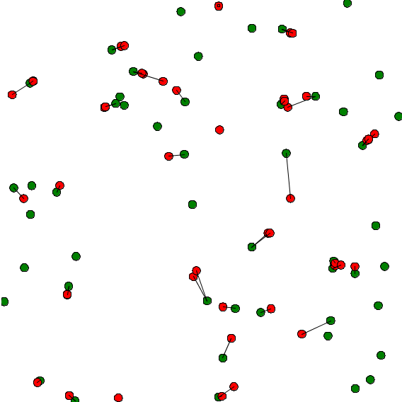

Attaching Skills
GAMA allows to attach skills to agents through the facet skills. Skills are built-in modules that provide a set of related built-in attributes and built-in actions (in addition to those already proposed by GAMA) to the species that declare them.
Index
Skills
A declaration of skill is done by filling the skills facet in the species definition:
species my_species skills: [skill1,skill2] {
}
A very useful and common skill is the moving skill.
species my_species skills: [moving] {
}
Once your species has the moving skill, it earns automatically the following attributes: speed, heading, destination and the following actions: move, goto, follow, wander and wander_3D.
Attributes:
speed(float) designs the speed of the agent, in m/s.heading(int) designs the heading of an agent in degrees, which means that is the maximum angle the agent can turn around each step.destination(point) is the updated destination of the agent, with respect to its speed and heading. It's a read-only attribute, you can't change its value.
Actions:
follow
moves the agent along a given path passed in the arguments.
- returns: path
speed(float): the speed to use for this move (replaces the current value of speed)path(path): a path to be followed.move_weights(map): Weights used for the moving.return_path(boolean): if true, return the path followed (by default: false)
goto
moves the agent towards the target passed in the arguments.
- returns: path
target(agent,point,geometry): the location or entity towards which to move.speed(float): the speed to use for this move (replaces the current value of speed)on(graph): graph that restrains this moverecompute_path(boolean): if false, the path is not recompute even if the graph is modified (by default: true)return_path(boolean): if true, return the path followed (by default: false)move_weights(map): Weights used for the moving.
move
moves the agent forward, the distance being computed with respect to its speed and heading. The value of the corresponding variables are used unless arguments are passed.
- returns: path
speed(float): the speed to use for this move (replaces the current value of speed)heading(int): a restriction placed on the random heading choice. The new heading is chosen in the range (heading - amplitude/2, heading+amplitude/2)bounds(geometry,agent): the geometry (the localized entity geometry) that restrains this move (the agent moves inside this geometry
wander
Moves the agent towards a random location at the maximum distance (with respect to its speed). The heading of the agent is chosen randomly if no amplitude is specified. This action changes the value of heading.
- returns: void
speed(float): the speed to use for this move (replaces the current value of speed)amplitude(int): a restriction placed on the random heading choice. The new heading is chosen in the range (heading - amplitude/2, heading+amplitude/2)bounds(agent,geometry): the geometry (the localized entity geometry) that restrains this move (the agent moves inside this geometry
wander_3D
Moves the agent towards a random location (3D point) at the maximum distance (with respect to its speed). The heading of the agent is chosen randomly if no amplitude is specified. This action changes the value of heading.
- returns: path
speed(float): the speed to use for this move (replaces the current value of speed)amplitude(int): a restriction placed on the random heading choice. The new heading is chosen in the range (heading - amplitude/2, heading+amplitude/2)z_max(int): the maximum altitude (z) the geometry can reachbounds(agent,geometry): the geometry (the localized entity geometry) that restrains this move (the agent moves inside this geometry
Other skills
A lot of other skills are available. Some of them can be built in skills, integrated by default in GAMA, other are linked to additional plugins.
This is the list of skills:
Advanced_driving, communication, driving, GAMASQL, graphic, grid, MDXSKILL, moving, moving3D, physical3D, skill_road, skill_road, skill_road_node, SQLSKILL
Example
We can now build a model using the skill moving. Let's design 2 species, one is "species_red", the other is "species_green". Species_green agents are moving randomly with a certain speed and a certain heading. Species_red agents wait for a species_green agent to be in a certain range of distance. Once it is the case, the agent move toward the species_green agent. A line link the red_species agent and its target.

Here is an example of implementation:
model green_and_red_species
global{
float distance_to_intercept <- 10.0;
int number_of_green_species <- 50;
int number_of_red_species <- 50;
init {
create speciesA number:number_of_green_species;
create speciesB number:number_of_red_species;
}
}
species speciesA skills:[moving] {
init {
speed <- 1.0;
}
reflex move {
do wander amplitude:90;
}
aspect default {
draw circle(1) color:#green;
}
}
species speciesB skills:[moving] {
speciesA target;
init {
speed <- 0.0;
heading <- 90;
}
reflex search_target when:target=nil {
ask speciesA at_distance(distance_to_intercept) {
myself.target <- self;
}
}
reflex follow when:target!=nil {
speed <- 0.8;
do goto target:target;
}
aspect default {
draw circle(1) color:#red;
if (target!=nil) {
draw polyline([self.location,target.location]) color:#black;
}
}
}
experiment my_experiment type:gui
{
output{
display myDisplay {
species speciesA aspect:default;
species speciesB aspect:default;
}
}
}